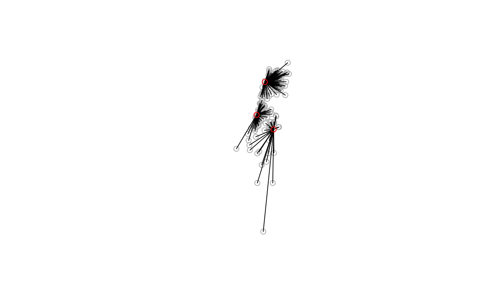
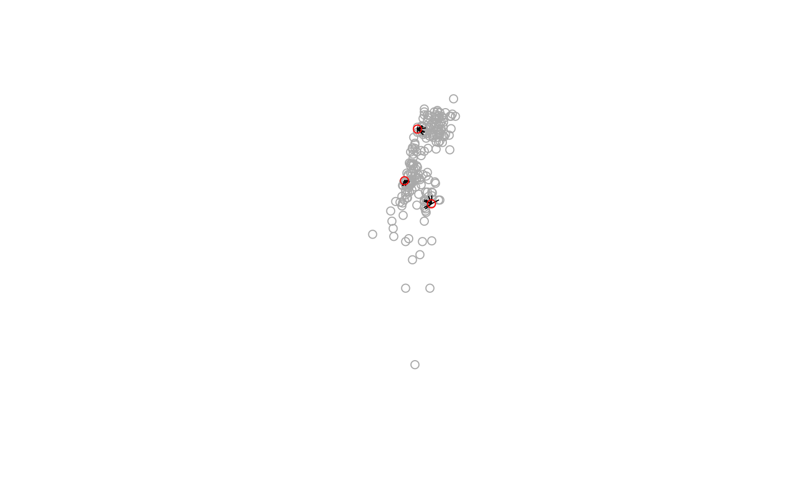

Returns a line layer with line segments which connect the nearest feature(s) from y for each feature in x. This is mostly useful for graphical purposes (see Note and Examples below).
st_connect(x, y, ids = NULL, progress = TRUE, ...)
| x | Object of class |
|---|---|
| y | Object of class |
| ids | A sparse list representation of features to connect such as returned by function |
| progress | Display progress bar? (default |
| ... | Other arguments passed to |
Object of class sfc with geometry type LINESTRING
The segments are straight lines, i.e., they correspond to shortest path assuming planar geometry regardless of CRS. Therefore, the lines should serve as a graphical indication of features that are nearest to each other; the exact shortest path between features should be calculated by other means, such as geosphere::greatCircle.
# Nearest 'city' per 'town' l = st_connect(towns, cities, progress = FALSE)#># Ten nearest 'towns' per 'city' l = st_connect(cities, towns, k = 10, progress = FALSE)#>if (FALSE) { # Nearest 'city' per 'town', search radius of 30 km cities = st_transform(cities, 32636) towns = st_transform(towns, 32636) l = st_connect(cities, towns, k = nrow(towns), maxdist = 30000, progress = FALSE) plot(st_geometry(towns), col = "darkgrey") plot(st_geometry(l), add = TRUE) plot(st_buffer(st_geometry(cities), units::set_units(30, km)), border = "red", add = TRUE) # The 20-nearest towns for each water body water = st_transform(water, 32636) l = st_connect(water[-1, ], towns, k = 20, dist = 100, progress = FALSE) plot(st_geometry(water[-1, ]), col = "lightblue", border = NA) plot(st_geometry(towns), col = "darkgrey", add = TRUE) plot(st_geometry(l), col = "red", add = TRUE) # The 2-nearest water bodies for each town l = st_connect(towns, water[-1, ], k = 2, dist = 100) plot(st_geometry(water[-1, ]), col = "lightblue", border = NA) plot(st_geometry(towns), col = "darkgrey", add = TRUE) plot(st_geometry(l), col = "red", add = TRUE) }